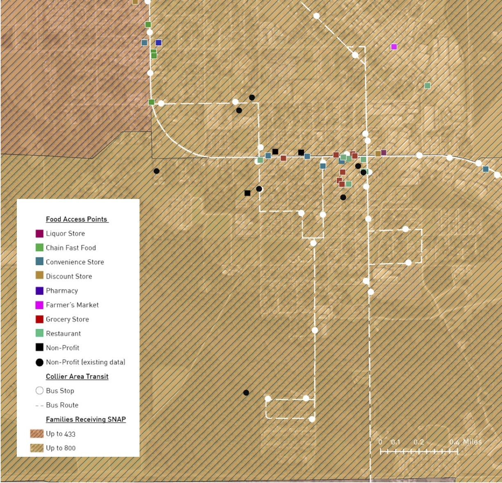

Mapping Food Access Project
Project Description
In collaboration with Dr. Thomas Felke at Florida Gulf Coast University's School of Social Work, my team conducted research and analysis on food access in Southwest Florida. We collected field data from various food access points in the community of Immokalee, FL using a new survey app called Survey123. The data we collected consisted of geographic coordinates of food access locations, business names and categories, and the availability and prices of certain foods.
After the initial data collection, we aggregated the results and used ArcGIS to create a map of the various food access points. Each location on the map stored information such as the availability and prices of certain foods and whether these locations accepted SNAP/EBT as a form of payment. The map was then presented to officials at the City of Fort Myers and will be used in further research through FGCU's School of Social Work. The end result is to yield policy changes regarding healthy food access in underserved areas such as Immokalee, regulate prices of healthy foods, and expand SNAP/EBT access to farmer's markets and other vendors who sell fresh, healthy foods.
